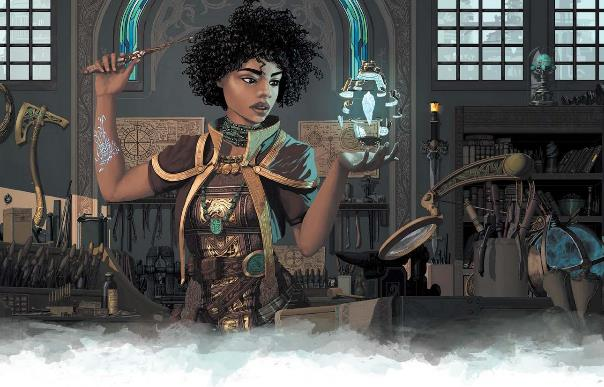

奥术魔法是一门科学。法师们使用充满力量的语言和神秘的手势，但也有许多方法来引导奥术能量—悬浮在药水液体中，被困在卷轴的图章中，或者通过聚焦魔杖。
奇械师是一个奥术的工程师；他们使用工具来创造奇蹟，而不是直接使用奥术能量。在一个挥舞着魔杖的人在战场上战斗，飞艇在天空翱翔的世界里，奇械师是开发工具来塑造未来的创新者和发明家。第六章提出了两个新的奇械师子类和一些注法，代表奇械师风格和专门化的多样性。
作为一名奇械师，你有非凡的才能。你不需要超凡奇械或大量的资源，传统上涉及到奥术产业，并且可以使用你的个人工具产生魔法效果。但你魔法的基础是什么？你是建立在卡尼斯家族使用的基本原则之上，还是在探索奥术科学的不那么传统的道路？
奇械师技术表提供了一些想法。使用其中一个或发展你自己的，考虑如何影响你的外表和你施法的方式。你的独特风格不需要改变任何与你的魔法相关联的默认规则。例如，你可能会说你的工作原理如同世俗科学，但你的法术仍然会被法术反制Counterspell给取消。找到创造性的方法来解释你的角色的技巧是如何与游戏规则互动的。也许你的一些理论是完全错误的；当你相信你可以通过与灵魂交谈或者使用这个逻辑来产生魔法效果时，你可能已经偶然发现了一种不同的方式来触发传统的奥术反应。如果你想要探索基于你的特殊技术的机制优势和限制，请与你的 DM 讨论。
|
d6 |
技术 |
|
1 |
卡尼斯传统Cannith Traditional。你遵循了卡尼斯家族和魔法评议会长期以来惯用的技巧。你可以在你的创作中加入创新的曲折，但你正在推进普通奥术科学的基本传统。 |
|
2 |
位面影响Planar Influence。你的魔法使用的不是艾伯伦的周围能量，而是位面的力量。你可能会打开微观的位面入口，或者使用来自位面的元素来产生你的效果—从费尼亚煤产生火焰或者从伊瑞安水晶产生光。 |
|
3 |
平凡科学Mundane Science。你的工作原则，可以从我们自己的世界认识。你用普通炸药制造火球，你的治疗药剂是一剂肾上腺素，你的奥术武器使用火药。你的技术对大多数法师和奇械师来说是完全莫名其妙的。
（注意：根据奇械师规则，你的效果仍然被认为是魔法效果，并且能够被反制。） |
|
4 |
万物有灵论Animism。我们周围到处都是精魂。万物都是有生命的。你可以和魔药说话，对着魔杖窃窃私语，或者把鬼魂或次级邪魔绑在你注法的物品上。这些不能大量生产；你和你所创造的一切都有一种私人关系。 |
|
5 |
魔法思维Magical Thinking。你的技术在任何传统法师或魔匠师看来都是荒谬的。你的童年是在瑟兰尼斯度过的，还是被奇异的幻象所驱使？
你会烘焙魔法派，把影子缝在一起，或者雕刻木制玩具，以某种方式产生强大的魔法吗？ |
|
6 |
用自己来做Self-Made。作为一名战俑奇械师，你可以使用你身体的碎片来制造你的效果。你是被设计成终极奇械师的吗？还是你发现了卡尼斯从未想过的关于战俑潜力的东西？ |
当你使用奇械师法术时，你和其他施法者遵循同样的规则—但是当你使用你的动作产生魔法效果时，你在做什么？ 你不是在祈求神的干预，不是在召唤超自然的守护神，也不是在用语言和手势制造一个火球。要施放魔法，你必须拥有一个你熟练的工具—为什么？ 因为你正在使用那个工具和它的相关技能来产生魔法效果。如果你用炼金工具来施放疗伤术Cure Wounds cure wounds，你不仅仅是用烧杯戳人；你在混合治疗药膏。
想想你的工具到底是什么。工匠工具是一个抽象的概念— 10 磅各式各样的物品和用品，而不仅仅是一个单一的工具。你可能会有一个小提包来装它们，或者一个带袋。如果你使用修补工具来创造一种效果，你使用的具体工具是什么？ 如何使用？ 下面讨论了一些最常见的工匠工具，但是你可以使用任何你熟悉的工匠的工具来施法。你甚至可以用酿酒工具或厨具来进行炼金术；既然可以吃魔法派，为什么还要喝药水呢？
炼金术药剂的挑战是暂停奥术的化学反应以供以后使用。触发即时效果要容易得多，这就是你施放法术时所做的。你的火焰箭 Fire Bolt可能是一个投掷瓶，毒气喷溅Poison Spray Poison Spray正在投掷肮脏的物质。疗伤术Cure Wounds，虚假生命False Life，水下呼吸Water Breathing可以是你混合和当场使用的药剂。易容术Disguise Self或变身术Alter Self可以是魔法化妆品。
家使用特殊的墨水和技术，通过符号和声音来传递奥术力量。与炼金术一样，制造即时效果要比以卷轴的形式暂停和维持要容易得多。当你施放火焰箭 Fire Bolt时，也许你会用你的羽毛笔在你面前的空中追踪火的名字；或者你可以把它写下来，然后读它来产生效果。无论你是在物品上画上记号，还是制作简单的卷轴并阅读它们，你的笔都比大多数剑更强大。
书写师的一种扭曲，你能够以同样的方式使用你的工具，绘制奥术符号。或者，更奇特的是，你可以专门计算地脉线和位面之间的关系。世界上到处都是等待启动的微型显能区；你正在使用你的工具来计算合适的排列来引导你需要的位面能量。
你想对它充满幻想，你可以把你需要的插入成现实。当你施展疗伤术Cure Wounds时，你实际上就是在伤口上作画；当你施放火焰箭时，你在空中涂上火焰，然后它是书写师的一种变体，但基本原理是一样的。甚至可以创建图像而不是文字的卷轴。
奇械师对盗贼工具和修补工具都有熟练，你使用它们的方式也差不多。盗贼工具包括撬锁器和其他精巧的操纵工具。你不会用一把开锁钳指着某人来发射火焰箭 Fire Bolt；但你可以用它来清理你用修补工具制作的龙形手枪上有问题的阀门。
你可以使用修补工具来验证各种奇怪的小工具，将其组合成一个原型，成为你工具包的一部分。
龙形武器可以发射火焰箭 Fire Bolt，而改良的护手可以制造电爪 Shocking Grasp。这些不稳定的原型不能被其他人使用，需要不断的修补来保持它们工作。所以你总是带着你的工具，而且要施法，必须有一个 “工具” 在手—它可以是一把龙枪，而不是钳子。你可以用你修补过的小金属蜘蛛来治疗伤口；虽然它看起来像一个普通的发条装置，但魔力让它移动和思考。平凡的工程只是小修小补的一部分，但神奇的魔法让它们运转起来。
魔杖、长杖和权杖是奥术法器的一些最基本形式。如果你用木雕工具来施展魔法，你实际上并不是在用锯子砸人。相反，你使用的是实验性的、奇异的或临时的魔杖或权杖。就像修补工具一样，你必须有一个工具在你的手中，你必须拥有木雕工具来施展你的魔法，但你手中的工具的确切性质是由你自己决定的。它可能看起来是一根传统的魔杖，也可能是你发明了一种革命性的魔杖、长杖或权杖。
作为一名奇械师，你需要在长休中准备法术，但这不像一个法师在读一本书。这是关于组装专门的用品和工具，你需要做你想做的事情。一个书写者无法用任何墨水创造出一幅卷轴，但是根据他们想要产生的效果类型，他们会使用完全不同的墨水。同样地，炼金师Alchemist会准备特殊的药剂，结合起来产生法术效果。如果你使用修补工具，你正在创建和微调你的小工具。你不可能在六秒钟内制造出一支龙枪；你在休息时准备手枪，当你施放法术时，你只是简单地装载魔法弹药或触发你在适当位置设置的奥术标志。
这也解释了法术位的概念。你准备的试剂很难生产，而且不能永远使用。你尽你所能地准备，但是一旦你完成了你所有的神秘墨水，你不能产生另一个卷轴效果，直到你有几个小时的工作。有效地，你的法术使用临时的魔法物品，只有你可以使用，在长休期间创造。
与此同时，注法可以让你创造出更持久的工具，你可以和你的同伴分享。奇械师创造魔法物品，但是为了保持职业平衡，你不能用它们来填充队伍；如何利用有限的资源，完全取决于你自己。
魔炮师Artillerist制造魔能炮台Eldritch Cannon和奥法火器Arcane Firearm。战地匠师Battle Smith制造钢铁守卫Steel Defender。任何奇械师都可以制造一个人工生命体同伴。但这些是什么呢？ 魔炮师Artillerist拿着枪和我们这个世界的人一样吗？ 不一定。
这些物品是“奥术”和“魔能”。就像奥术火砲的主要形式是攻城法杖Siege Staff一样，魔炮师Artillerist也使用木雕工具，将 “一根权杖、一根长杖或一根魔杖变成奥法火器Arcane Firearm，一个用于你的破坏性法术的管道”。 这么说吧，你是一个专业的舞杖者Wandslinger，有改进过的魔杖、长杖和权杖。你可以选择它们的外观—魔杖、专用手弩、燧发枪、微型金属龙，或者任何你喜欢的造型。“奥法火器Arcane Firearm” 并不一定意味着 “手枪”。
虽然名字 “魔能加农砲” 听起来像一个巨大的火砲，魔能加农砲要么是小型或微型的，可能小到足以握在你的手上。它长什么样子？它有腿吗？它是一个动态的弩砲吗？一个小型的攻城法杖Siege Staff？ 一条向你的敌人喷射火焰的小铜龙？
同样的原理也适用于人工生命体的外表。考虑你的风格和你使用的魔法工具。
你的人工生命体仆人可以传送你的触及类法术，但如何传送？ 如果你使用画家工具来施展你的魔法，你的人工生命体可能是一个微小的人形画笔，一个浮动的调色板，甚至是一个由活颜料制成的生物。炼金师Alchemist的人工生命体可以是一个小坩埚，也可以是一个用玻璃和烧杯制成的小人形生物。
在所有这些过程中，机制没有改变。你奥法火器Arcane Firearm的形状对战斗规则没有影响；它改变的是你所讲述的故事。你的奇械师有什么有趣的？ 你的人工生命体是怎么评价你的？
你已经开发了你的风格并选择了你的工具。但是你是如何以及在哪里发展你的技能的呢？你与已建立的奇械师组织order of artificers有联系吗？ 考虑以下这些方法，你的背景可以反映你作为一名奇械师的经验。
你在卡尼斯家族或魔法评议会工作，在贸易学校学习，在工业工厂工作。虽然你为了冒险而放弃了工厂，但你仍然和制造者行会有着紧密的联系。
你操作和维护了战争引擎。你为哪个国家效力？你为自己的贡献感到骄傲，还是被自己的行为所困扰？你服役后光荣退役了吗？或者你是一个离开家乡去帮助无辜百姓的民间英雄？
你不擅长与权威打交道。你一开始是在阿卡尼克斯或十二学会，但你逐出去了，因为你挑战体系太多次。你很聪明，但决心找到自己的路。
你从来没有研究过奥术科学，但你有一种奇械师的直觉天赋。也许你是在战场上长大的，从战俑泰坦或破碎的漂浮堡垒中拾取残片。你的工作并不完美—通常看起来不会运作—但你能做的事情是魔匠师无法匹敌的。
你为一个在公众视线之外运作的组织提供神秘的帮助。你是为安黛尔的皇室之眼或布鲁兰的国王密使代理人制作常见物品吗？ 还是像波洛马氏族或塔卡南家族那样的阴森家族？ 你为什么要转向冒险的生活呢？你过去生活的哪些片段会回来困扰你？
如果你是公会工匠，你在哪个公会工作？当你在萨恩买到一根魔法飞弹魔杖 Wand of Magic Missiles时，它是谁做的？这里有一些雇佣或训练奇械师的机构，派系可以与你的背景或在冒险中扮演一个角色。
在伽利法的黄金时代，魔法评议会为了所有人的利益而钻研魔法的奥秘。今天，它只服务于安黛尔人，但仍然是卡尼斯家族以外最大的法师和奇械师学院。魔法评议会会主要致力于战争的努力，但它也继续发展常见魔法物品和其他魔法工具，以改善安黛尔人民的日常生活。
达坎继承人保持着他们自己的古代奇械师传统，这在第四章和第六章有讨论。
在五国之中，卡尼斯家族是最大的奇械师来源，通过它的贸易学校提供培训，并在它的工厂和工厂雇用魔匠师和奇械师。制造者行会既生产魔法物品，也生产世俗物品，而组织松散的修补匠行会则专注于维护和修理。卡尼斯拥有广泛的专业知识，安黛尔的西卡尼斯擅长炼金术，布鲁兰的南卡尼斯在一般工业方面有优势，东卡尼斯则擅长火砲和死灵术。
这是在终末战争中发展起来的，这是一小群行家结社和奇械师，他们能利用银焰的力量制作的工艺品。
每个国家在战争中都使用了强化和奥术火砲，以及战斗魔法。虽然大多数国家都非常依赖卡尼斯家族，但每个国家都有自己的研究魔法军事应用的项目，还有一支训练来操作砲兵的魔匠师部队。冒险家会遇到雄心勃勃的军事技师，他们的野心超出了他们的技能。
与旅者教团类似，这个神秘的魔匠师和奇械师组织order of artificers相信他们是直接受到天命诸神昂纳塔的启发。在本节中，可以在其他组织中找到分散的成员。昂纳塔的选民相信，诡计应该服务于更大的利益，他们寻求推动他们的组织朝着这样积极的目的。
这个精英智库专注于开发新的和改进的交流形式，既通过改进现有的工具，如通讯石Speaking Stone，并开创新的技术。
这个教团是昂纳塔选民的黑暗反映。旅者的追随者在这个区域的大多数组织中都可以找到，在卡尼斯家族有很大的影响力。旅行家们不惜一切代价追求创新，制造出可能打破现有权力平衡或以其他方式造成混乱的武器或工具。一些局外人认为飞艇（导致欧瑞恩和林兰德之间的冲突）和战争可能是由这些文化创造的—许多人指责旅者造成了哀伤叹咏。
而卡尼斯家族是一般工业的主要来源，十二学会专注于所有龙纹家族之间的合作。 昆达拉克宝库网路就是在这里开发出来的，同时使用了很多工具，这些工具借鉴了多个家族的特点。
吉拉哥元素束缚工业是魔匠师和奇械师的重要来源，特别是那些追随位面影响之路的。这不是一个单一的组织；有六个主要的家族涉及。 吉拉哥认为他们的束缚技术是一项重要的国家资源，除了地侏之外，他们不太可能训练任何人。